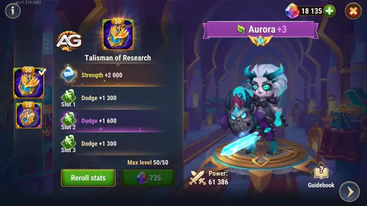

Desde tenra idade, Aurora foi atraída pela luz. Movida por uma determinação incomum, ela deixou sua casa em busca de um destino maior. Sua jornada a levou aos domínios de Riversar, onde recebeu a honra de se tornar uma paladina. Assumindo o papel de protetora e guia de seu povo, Aurora se tornou uma luz brilhante em tempos sombrios, inspirando esperança e coragem em todos que cruzavam seu caminho.
Sincronização de Habilidades: Aproveite ao máximo a capacidade de atordoamento de Aurora, sincronizando-a com os ataques de sua equipe para maximizar o impacto. Use o atordoamento para interromper habilidades importantes do inimigo ou para criar aberturas para ataques decisivos.
Gerenciamento de Energia: Esteja atento ao gerenciamento de energia de Aurora para garantir que ela possa usar suas habilidades quando mais necessárias. Equilibre o uso de suas habilidades de absorção de dano e atordoamento para garantir um impacto constante no campo de batalha.
Guia Talismã da Pesquisa da Aurora
Com o Talismã da Pesquisa, Aurora ganhará 80.000 pontos adicionais de vida e 6.600 pontos de esquiva, totalizando 14.131 pontos de esquiva.
Essa melhoria significativa em seus atributos aumentará muito a sobrevivência e eficácia de Aurora em batalhas, permitindo que ela se sinergize bem com equipes focadas em esquiva, especialmente quando combinada com Dante.
Atributos do Talismã da Pesquisa
Slot
Estatística
Pontos
0
Força
+2000
1
Esquiva
+2200
2
Esquiva
+2200
3
Esquiva
+2200

Aurora com o Talismã da Pesquisa, Hero Wars.
O Segundo Talismã de Aurora: O Talismã do Paladino
Nos artefatos se Aurora priorize o livro para ganhar mais vida e esquiva, depois o anel para ganhar mais vida e subir o atributo principal e por último a arma para dar esquiva para o time todo quando ativado.
Prioridades
Artefatos
Aumento de estatísticas
1º
Livro
Esquiva +2967 Vida +53394
2º
Anel
Força +3990
3º
Arma Legado de Selias
Esquiva +8898
Artefatos de Aurora no nível máximo, Hero Wars Mobile.
Visuais
Nos visuais de Aurora priorize esquiva para times com Octávia e Armadura para outros tipos de times. Depois suba vida e força para ganhar durabilidade e por último perfuração mágica para causar mais dano.
Com determinação e prática, você poderá conduzir sua equipe à vitória e escrever seu próprio legado no vasto universo de Hero Wars Alliance. Boa sorte em suas aventuras!
Você gostou das nossas dicas do Guia da Aurora? Há algo que não entendeu ou gostaria de sugerir mudanças? Convidamos você a se juntar à nossa sessão de comentários na página do Alexandre Games Blog. Não hesite em expressar sua opinião, clarificar suas dúvidas e compartilhar sua sugestões. Clique no botão abaixo para começar:


 Alvanor
Alvanor Arachne
Arachne Chabba
Chabba Cogu
Cogu Thea
Thea Yasmine
Yasmine